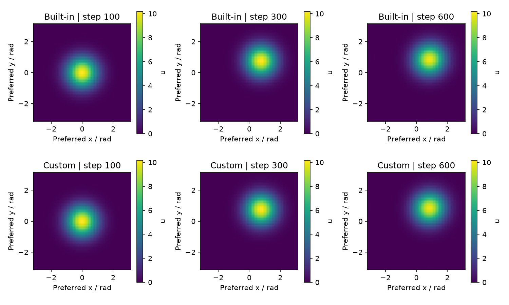
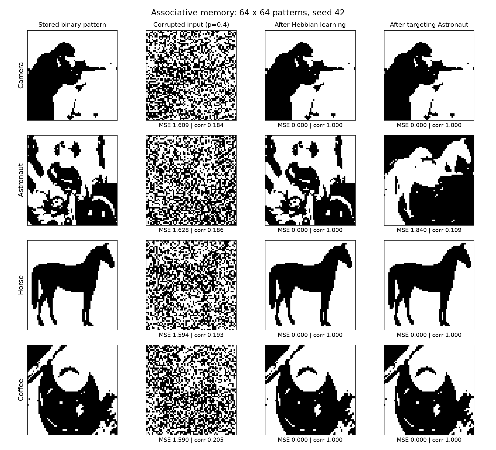
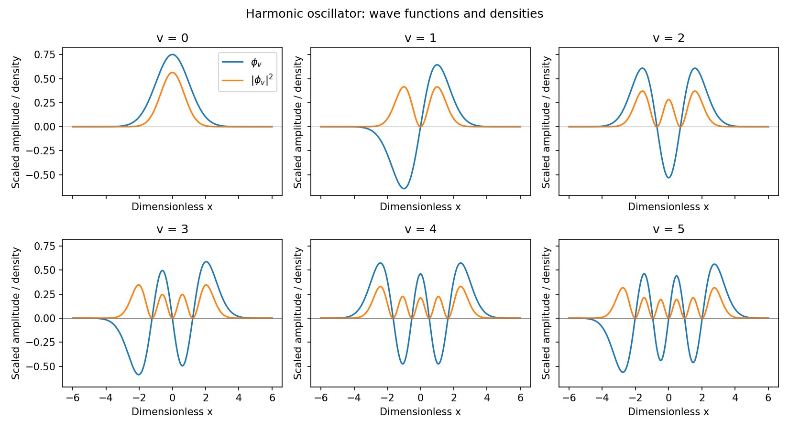
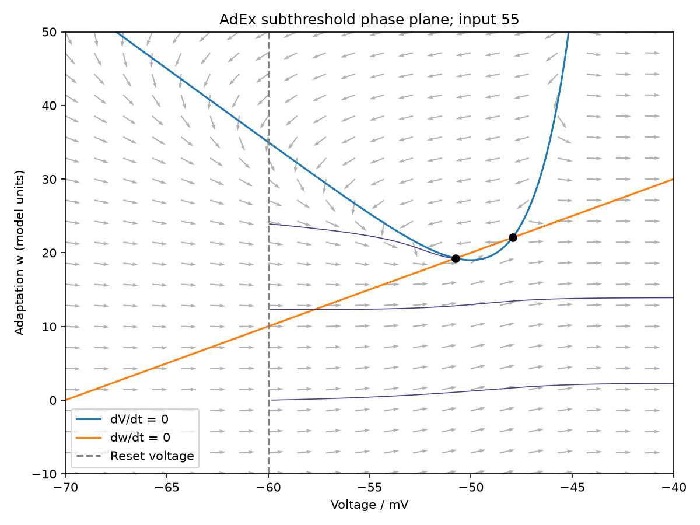
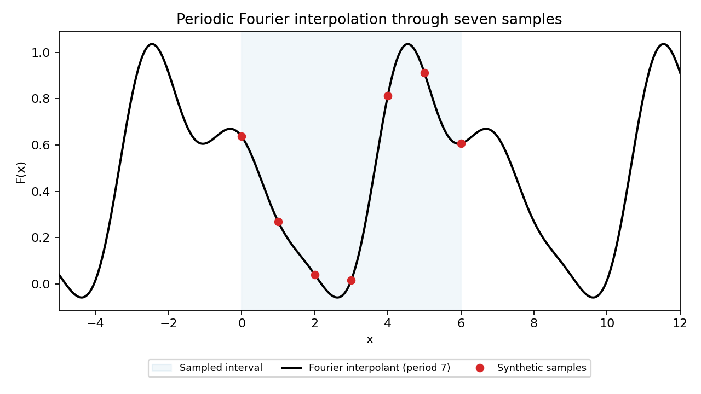

Neural modelling
Continuous attractor networks
Moving stimuli, persistent activity, and spatial representations in 1D rings and 2D periodic sheets.
BrainPy · CANNsView project
Coursework and experiments in scientific computing.
7 projects shown

Neural modelling
Moving stimuli, persistent activity, and spatial representations in 1D rings and 2D periodic sheets.

Machine learning
Storing image patterns in a Hopfield network, recalling corrupted inputs, and exploring a targeted negative Hebbian update.

Chemistry
Exploring molecular vibration through wave functions, probability distributions, and a model of vibration–rotation coupling.

Neural modelling
Simulating membrane voltage and ion-channel gating as four independent neurons respond to different current pulses.

Neural modelling
Comparing leaky integrate-and-fire, AdEx, and Izhikevich models through voltage traces and phase-plane analysis.

Chemistry
Analysing electrochemistry measurements and exploring normalisation and orthogonality of particle-in-a-box states.

Mathematics
Constructing a periodic curve through seven synthetic points using Fourier basis functions and a linear system.
These projects grew out of scientific-computing coursework and neural-computation workshops. Individual repositories document teaching material, reference implementations, preparation changes, and the scope of their results.